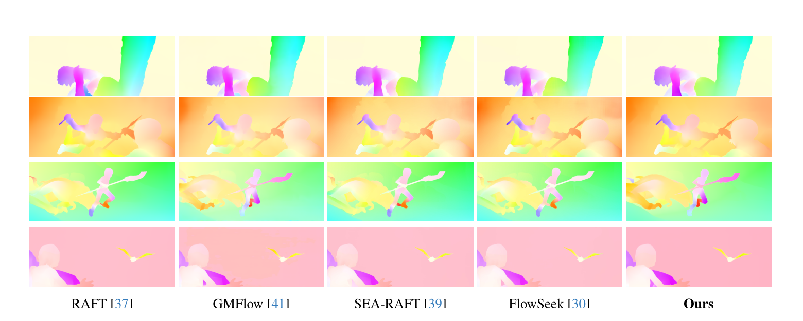
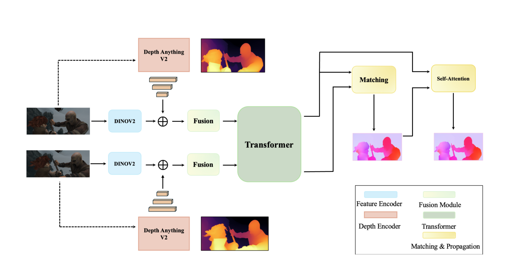

Rethinking Dense Optical Flow
without Test-Time Scaling
IEEE/CVF CVPR 2026, ViSCALE
A dense optical flow framework that estimates dense motion in a single forward pass by reusing pretrained visual semantic and geometric priors.
Visual and Spatial AI Lab · VCCM Section · College of Performance, Visualization & Fine Arts · Department of Electrical & Computer Engineering · Department of Computer Science & Engineering · Texas A&M University

Core Idea
Is scaling test-time computation the only way to improve dense optical flow accuracy?
Answer
No. We show that strong foundation priors can substitute for expensive iterative refinement in dense optical flow.
Approach
Fuse frozen DINO-v2 visual features with monocular depth foundation cues, then perform global matching without recurrent updates.
Method Overview
1. Visual Priors
DINO-v2 provides semantically rich and spatially coherent visual features learned without motion supervision.
2. Geometric Priors
Depth Anything V2 provides boundary-aware scene structure, useful near occlusions, motion discontinuities, and thin structures.
3. Global Matching
Fused representations are matched globally to estimate dense correspondences without recurrent refinement.

Results
The model achieves strong cross-dataset generalization while avoiding iterative test-time refinement.
| Method | # Refine | Things Val EPE | Sintel Clean EPE | Sintel Final EPE |
|---|---|---|---|---|
| RAFT | 32 | 4.25 | 1.43 | 2.71 |
| GMFlow | 0 | 3.48 | 1.50 | 2.96 |
| SEA-RAFT (S) | 4 | — | 1.27 | 4.32 |
| FlowSeek (T) | 4 | 3.94 | 1.16 | 2.48 |
| Ours no refinement | 0 | 3.02 | 1.46 | 2.81 |
Cross-dataset generalization after training on Chairs and Things. Lower is better.
Citation
If you find this work useful, please cite the paper.
@inproceedings{chanda2026rethinking,
title = {Rethinking Dense Optical Flow without Test-Time Scaling},
author = {Chanda, Praroop and Kumar, Suryansh},
booktitle = {IEEE/CVF Conference on Computer Vision and Pattern Recognition (CVPR) Workshops},
year = {2026},
note = {ViSCALE Workshop, Denver},
url = {https://arxiv.org/abs/2605.08000}
}